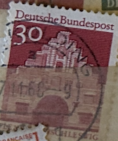
| SOURCE | TITLE| IMAGE MATCH | click to source page |
| eBay | West Germany - 1966 -1969 - Building Structures 12th Century - 30Pfg - Used | eBay | 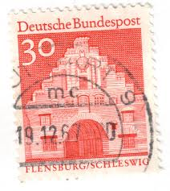 |
| Stampedia | stampedia GERMANY STAMP catalog | 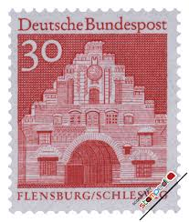 |
| HipStamp | Germany 941 VFU Z005-1 | Europe - Germany & Colonies - Germany, General Issue Stamp / HipStamp | 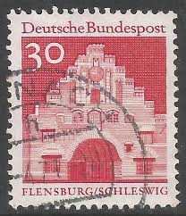 |
| eBay | German Postage 11 Stamps Deutsche Bundespost Used, 1959 1966 1970 1975 1977 1978 | eBay | 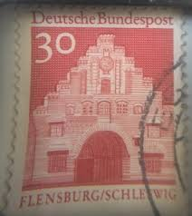 |
| eBay Australia | G593) 1964 GERMAN 30pf red German architecture ow1371 | eBay Australia | 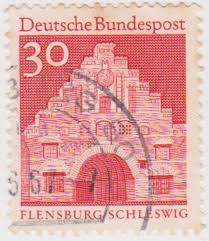 |
| eBay | Deutsche Bundespost Flensburg/Schleswig Germany/German Postage Stamp | eBay | 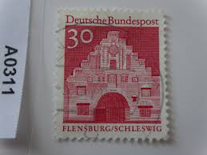 |
| Find Your Stamps Value | Value of deutsche bundespost 30 flensburg schleswig no berlin stamps | 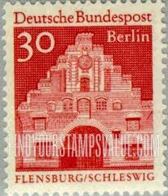 |
| Find Your Stamps Value | German Architecture of 12 Centuries - Nordertor, Flensburg 30pf Red stamp price, value | 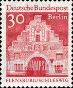 |
| HipStamp | Germany 1967 Sc#941 30pf Red Flensburgh Schleswig USED. | Europe - Germany & Colonies - Germany, General Issue Stamp / HipStamp | 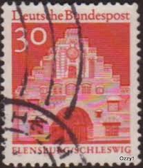 |
| eBay | Deutsche Bundespost Flensburg/Schleswig Germany/German Postage Stamp | eBay | 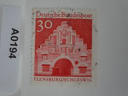 |
| Todocolección | alemania- imperio aleman 1905-- usado - Buy Antique stamps of Germany on todocoleccion | 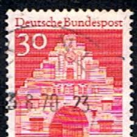 |
| Etsy | German Flensburg/schleswig Stamp, Postage Ad2 Black Cancelled Used….. - Etsy UK | 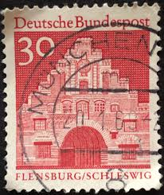 |
| Shutterstock | Germany Circa 1938 Stamp Printed Germany Stock Photo 109649591 | Shutterstock | 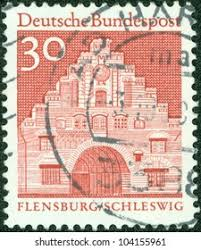 |
| Alamy | GERMANY - CIRCA 1967: A stamp printed in Germany, shows the Gatehouse of Lorsch/Hessen, circa 1967 Stock Photo - Alamy | 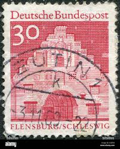 |
| Dreamstime.com | USA - Circa 1966 : a Postage Stamp Printed in the US Showing a Portrait of the Architect, Interior Designer, Writer and Art Dealer Editorial Stock Image - Image of building, head: 201326279 | 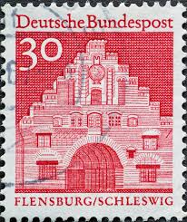 |
| CollectorBazar | Germany - Used - Flensburg- 21IU4491 | 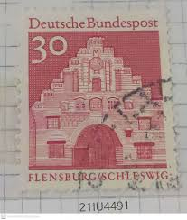 |
| Redbubble | Vintage Deutsche Red 130 Bundespost Postage Stamp" Magnet for Sale by red-amber65 | Redbubble | 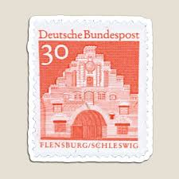 |
| Shutterstock | Germany Circa 1966 Stamp Printed By Stock Photo 168954512 | Shutterstock | 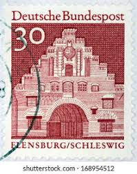 |
| Dreamstime.com | 1,074 Flensburg Schleswig Stock Photos - Free & Royalty-Free Stock Photos from Dreamstime | 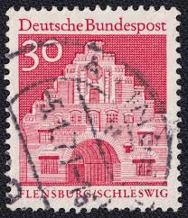 |
| Shutterstock | 25 Norderstrasse Royalty-Free Images, Stock Photos & Pictures | Shutterstock | 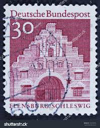 |
| Shutterstock | 19+ Thousand German Post Stamp Royalty-Free Images, Stock Photos & Pictures | Shutterstock | 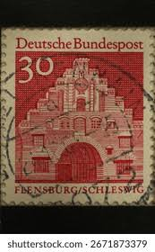 |
| Todocolección | sello alemán deutsche bundespost. 30 pf. flensb - Acheter Timbres anciens d'Allemagne sur todocoleccion | 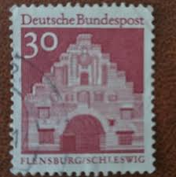 |
| eBay | German 1979 Vischering Moated Castle and Norder Gate | eBay | 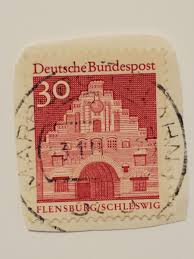 |
| eBay | BRD FRG #Mi493 MNH 1967 Norder Gate Flensburg/Schleswig [941 YT386 SG1371] | eBay | 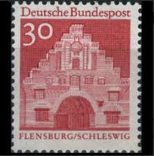 |
| Shutterstock | 6+ Thousand Deutsche Post Royalty-Free Images, Stock Photos & Pictures | Shutterstock | 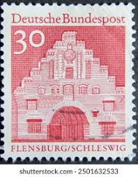 |
| Dreamstime.com | Flensburg in Schleswig-Holstein, Germany, Skyline View from Seaside Editorial Photo - Image of north, city: 260729851 | 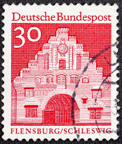 |
| YouTube | Postage stamp. Deutsche Bundespost. Flensburg/Schleswig. Price 30 - YouTube | 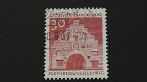 |
| Dreamstime.com | Norder Gate, Flensburg/Schleswig, German Buildings from Twelve Centuries Serie, Circa 1966 Editorial Stock Image - Image of postal, retro: 142502914 | 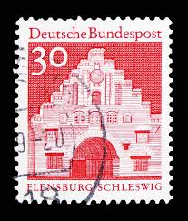 |
| 45cat | Postmarks - 8501 Allersberg - b - Germany (1968) | 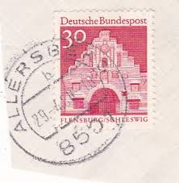 |
| eBay | Berlin 1966 Mi. Nr. 275 mit Rand Gestempelt (24656) | eBay | 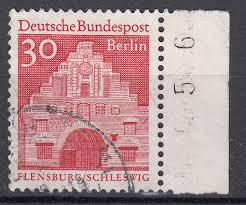 |
| Alamy | GERMANY - CIRCA 1967: A stamp printed in Germany (West Berlin) shows Flensburg city northern gate (Nordentor) circa 1967 Stock Photo - Alamy | 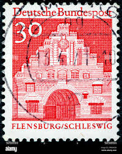 |
| eBay | German Stamp Flensburg/Schleswig 30 Pfennig Deutsche Bundespost TKS12* | eBay | 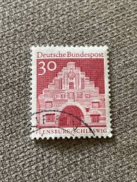 |
| HipStamp | 1966, Germany, 30pfg, Used, Sc 940 | Europe - Germany & Colonies - Germany, General Issue Stamp / HipStamp | 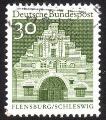 |
| eBay | GERMANY 941 - Architecture "Nordertor, Flensburg" (pb45868) | eBay | 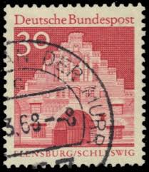 |
| eBay | Deutsche Bundespost 30 Postage Stamp ( Set 4 ) | eBay | 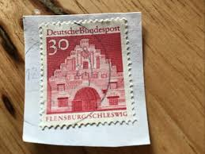 |
| Find Your Stamps Value | Value of deutsche bundespost 30 flensburg schleswig stamps | 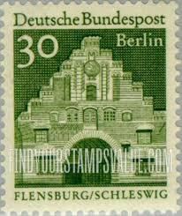 |
| PicClick FR | VINTAGE STAMPS GERMAN Germany 30 Pfg Flensburg Schleswig Bundespost Stamp X1 B14 EUR 1,60 - PicClick FR | 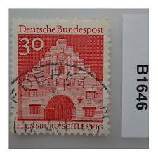 |
| PicClick UK | DEUTSCHE BUNDESPOST FLENSBURG/SCHLESWIG Germany/German Postage Stamp £1.16 - PicClick UK | |
| Mediabd | Germany 1967 30 Pf Norder Gate Stamps, Used | 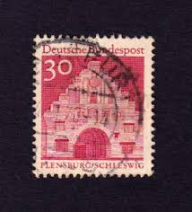 |
| Poppe Stamps | Poppe Stamps: German Federal Republic, 1964, 1370, Gates - stamps for sale by theme and country | 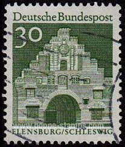 |
| eBay UK | German Stamp Flensburg/Schleswig 30 Pfennig Deutsche Bundespost | eBay UK | 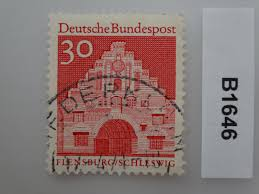 |
| Todocolección | alemania 1390** - año 1991 - 275º aniversario d - Buy Antique stamps of Germany on todocoleccion | 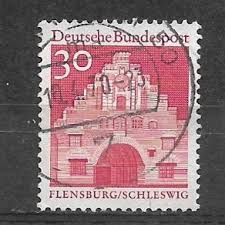 |
| eBay UK | German Stamp Flensburg/Schleswig 30 Pfennig Deutsche Bundespost | eBay UK | 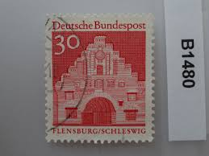 |
| Dreamstime.com | 157 Germany Outdoor Stamp Stock Photos - Free & Royalty-Free Stock Photos from Dreamstime |  |
| eBay | 4 Vintage c. 1967 Germany 30pf Nordertor Bundespost Flensburg Schleswig Stamp | eBay | 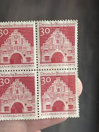 |
| Alamy | Deutsche bundespost deutsche bauwerke 30 hi-res stock photography and images - Alamy | 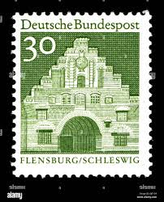 |
| HipStamp | Berlin, Germany 1966 Scott 9N239 used - 30pf, Nordertor, Flensburg, Schleswig | Europe - Germany & Colonies - Berlin, General Issue Stamp / HipStamp | 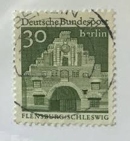 |
| Shutterstock | German Travel Stamp: Over 877 Royalty-Free Licensable Stock Photos | Shutterstock | 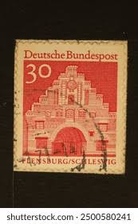 |
| Todocolección | alemania (rfa). 1975. yvert # 700. industria y - Buy Antique stamps of Germany on todocoleccion | 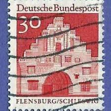 |
| Alamy | German postage stamps in stamp album - Hitler portrait head and large denomination hyperinflation stamps and Bavarian State Railway stamp Stock Photo - Alamy | 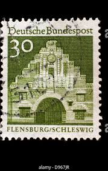 |
| PicClick UK | DEUTSCHE BUNDESPOST 20 Pfennig Lorsch/Hessen Germany/German Postage Stamp £1.16 - PicClick UK | 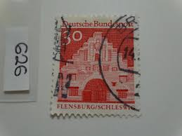 |
| eBay | Deutsche Bundepost. 30 Feensburgh | eBay | |
| Todocolección | alemania berlin yvert num. 668 ** serie complet - Buy Antique stamps of Germany on todocoleccion | |
| Alamy | German postage stamp schleswig holstein hi-res stock photography and images - Alamy | |
| Alamy | GERMANY - CIRCA 1965: a stamp printed in the Germany shows Tegel Castle, Berlin, circa 1965 Stock Photo - Alamy | |
| Alamy | Germany postage hi-res stock photography and images - Page 19 - Alamy | |
| Todocolección | o) 1983 germany, joseph von fraunhofer, opticia - Buy Antique stamps of Germany on todocoleccion | |
| Dreamstime.com | Horn of the Vintage Seagrave Fire Truck from 1917 in Firefighters Museum in Borculo (Netherlands) Editorial Stock Photo - Image of pumper, transport: 218059878 | |
| Osta.ee | Saksamaa " HOONED " 1966/69 (247183386) - Osta.ee | |
| Shutterstock | Germany Circa 1966 Postage Stamp Germany Stock Photo 2157922025 | Shutterstock |